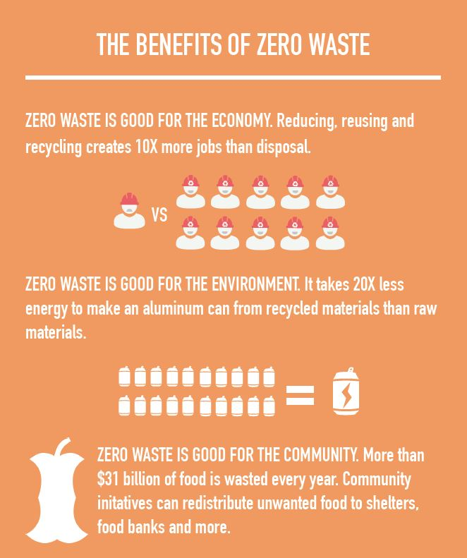
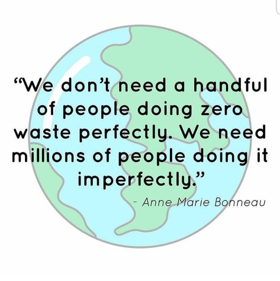

In the United States, a lot of the "zero waste" movement can be attributed to Bea Johnson who is named as the founder of the Zero Waste Lifestyle Movement. She gained popularity in 2008 after being able to fit her family of four's trash for a year into a mason jar.
The zero waste movement has flurished since around this time and up until present day where there are entire stores based around selling zero waste or low waste products. These include food, clothing, kitchen items, bathroom products, and more.
However, many people began to think that in order to be part of the zero waste movement, one had to be able to fit all of their trash into a mason jar for a year just as Bea Johnson did. The reality is it is very difficult for a person to do this -- and it has sparked a lot of people within the zero waste community to re-define what it means to be zero waste.
The quote "We don't need a handful of people doing zero waste perfectly. We need millions of people doing it imperfectly" by Anne Marie Bonneau now gives way to a new movement within the zero waste community to allow for those who may be disadvantaged by where they live, their socio-economic class, and other factors that limit people's abilities to achieve the perfect goal of fitting a years worth of trash into a jar.
Thus, the zero waste movement isn't founded upon the idea of creating zero waste, but rather the call for finding ways of creating less waste and choosing that option when possible.